Реальні реабілітаційні центри, медичні заклади та спортивні зали, які ми обладнали тренажерами МТБ по всій Україні
📍 Львів, Україна
Спеціалізований реабілітаційний центр для ветеранів АТО/ООС та цивільних з бойовими травмами. Оснащений комплектом тренажерів МТБ для відновлення після поранень, ампутацій та контузій. Програма реабілітації дозволяє повернути рухову функцію навіть при серйозних ушкодженнях.
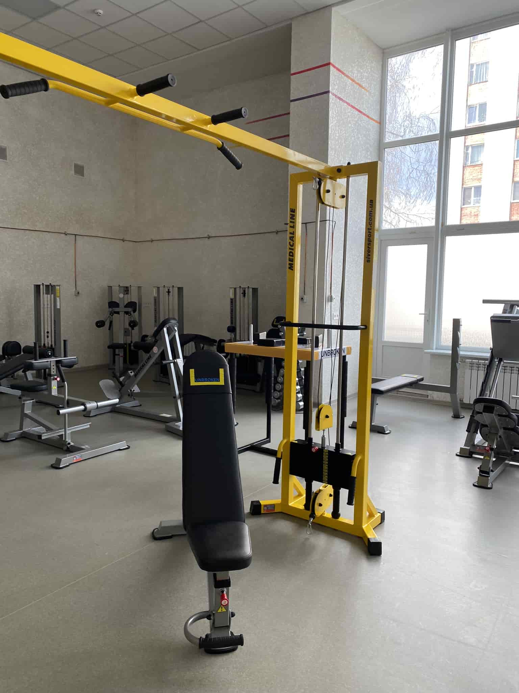
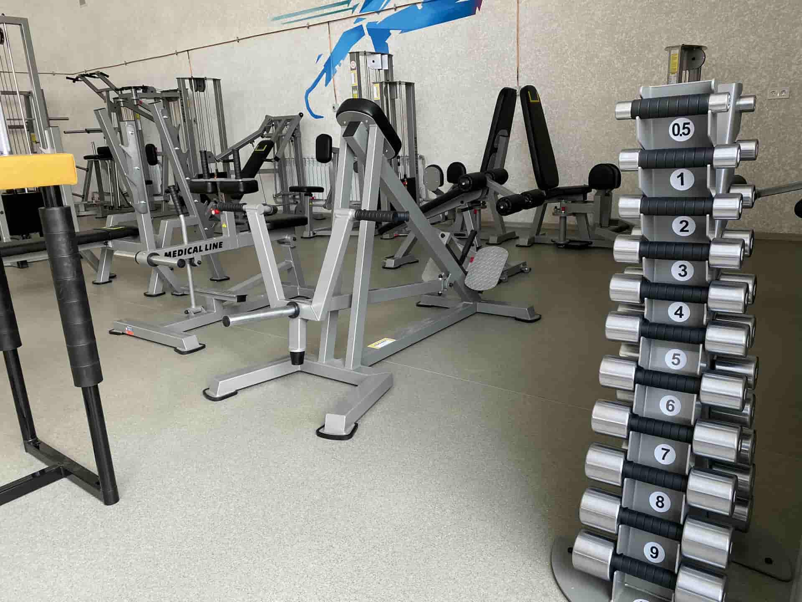
📍 Чернігів, Україна
Спеціалізований кінезіологічний центр у Чернігові. Повне оснащення залу тренажерами МТБ різних модифікацій — від МТБ-1 до МТБ-4. Центр приймає пацієнтів із захворюваннями хребта, суглобів, після інсульту та травм. Власна методика роботи за системою Бубновського.
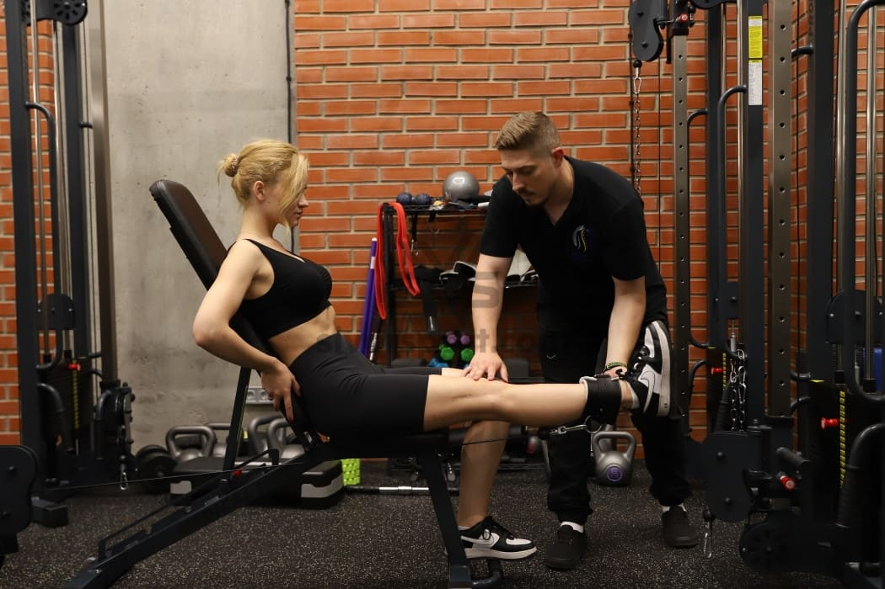
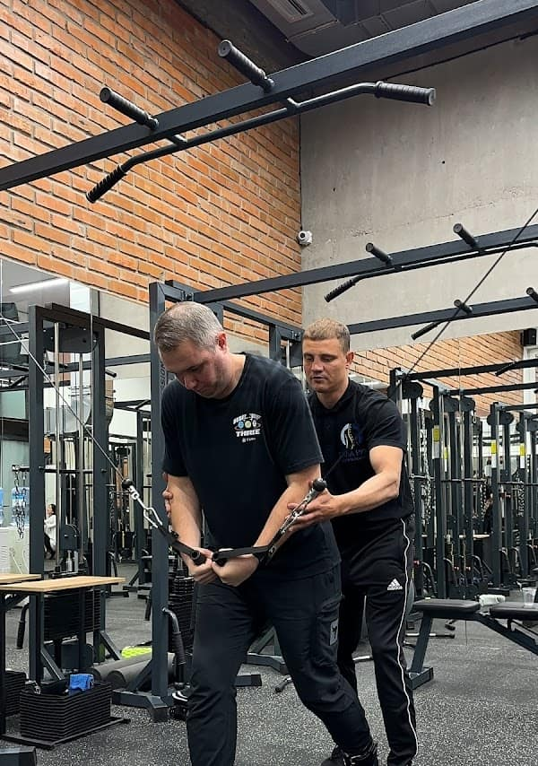
📍 Україна
Повноцінний центр кінезітерапії з широким спектром обладнання: тренажери МТБ, горизонтальна лава, масажні столи. Центр спеціалізується на відновленні після травм хребта, грижах міжхребцевих дисків, остеохондрозі. Прийнято понад тисячу пацієнтів з позитивним результатом.

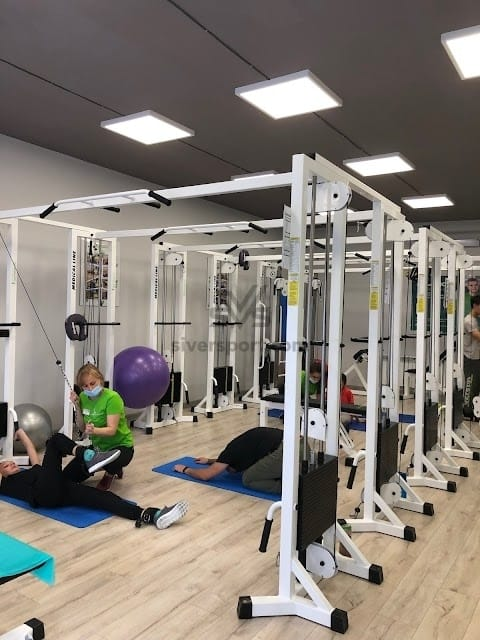
📍 Чернігів, Україна
Медичний центр із реабілітаційним залом, повністю оснащеним тренажерами МТБ. Робота ведеться за авторською методикою кінезітерапії — без медикаментів, тільки рух. Пацієнти центру відновлюються після операцій на хребті, замін суглобів і неврологічних захворювань.
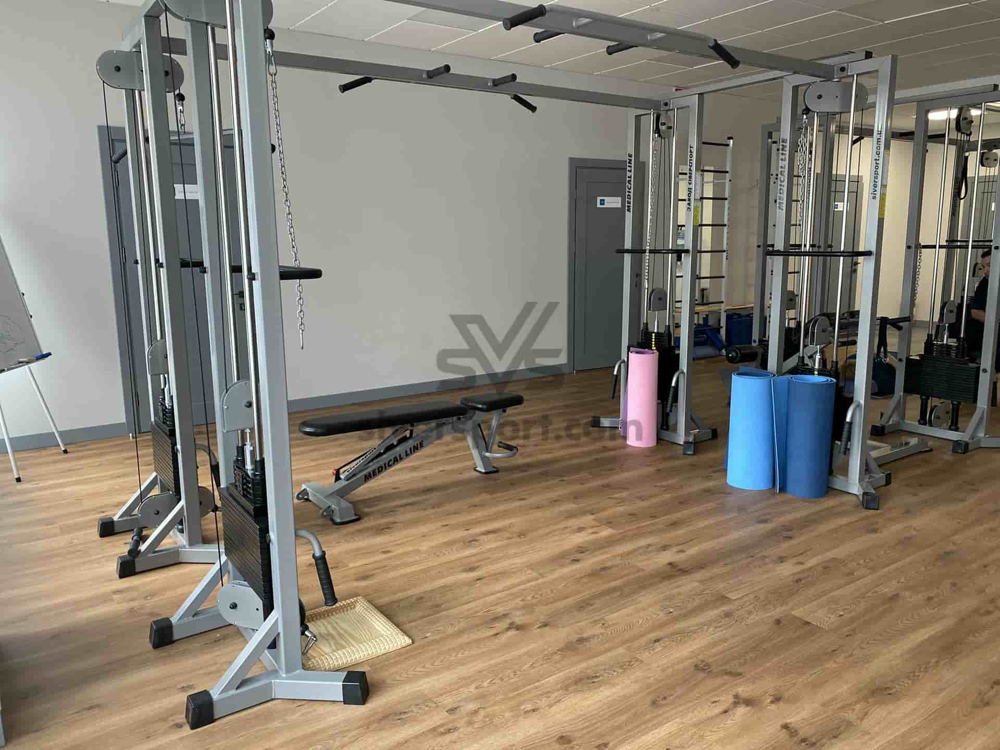
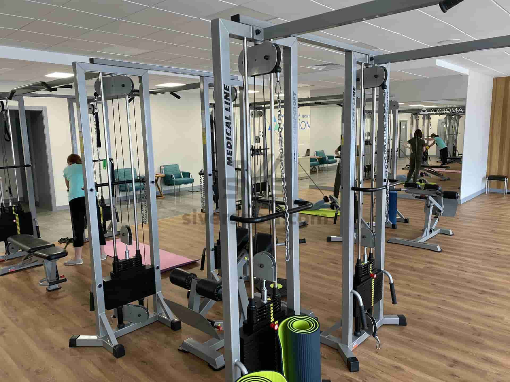
📍 Україна
Медичний центр з функціональним реабілітаційним залом. Оснащений тренажерами МТБ для роботи з пацієнтами різного віку — від дітей до людей похилого віку. Основний напрямок — захворювання опорно-рухового апарату і постопераційна реабілітація.
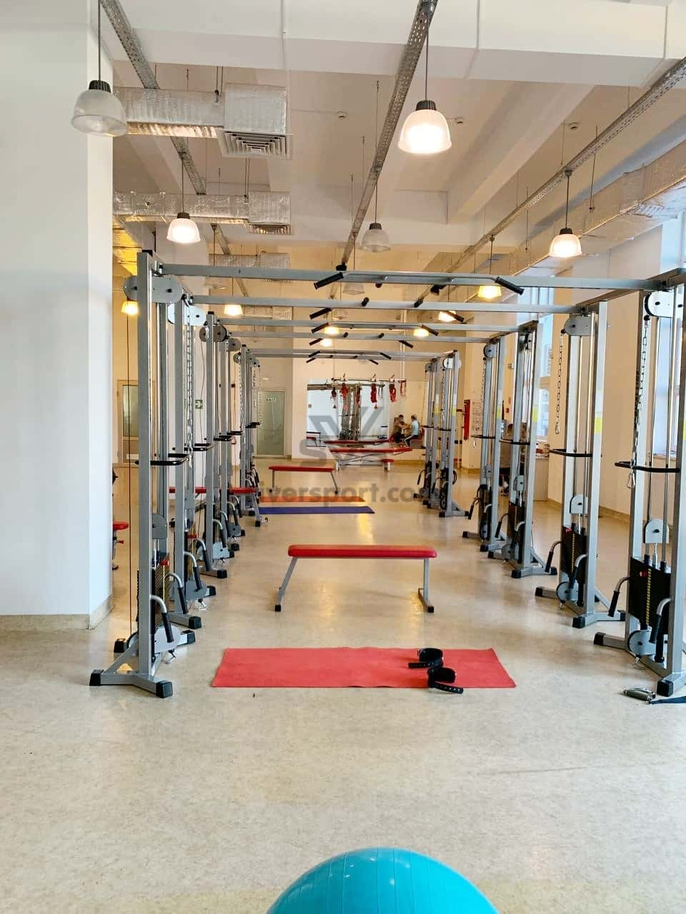
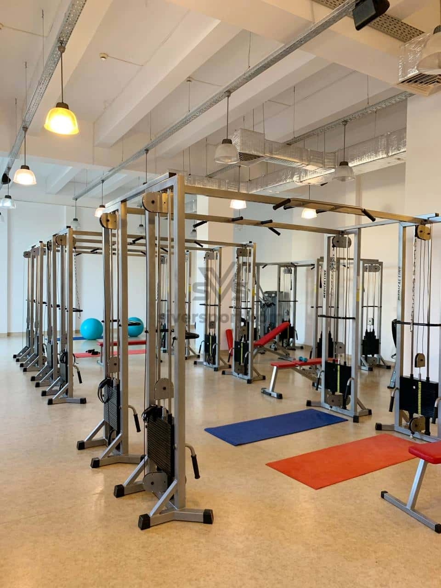
📍 Україна
Приклад облаштування власного реабілітаційного залу вдома. Клієнт придбав комплект тренажерів МТБ для систематичних занять після травми хребта. Домашній зал дозволяє займатись без обмежень розкладу клініки — 7 днів на тиждень у зручний час.
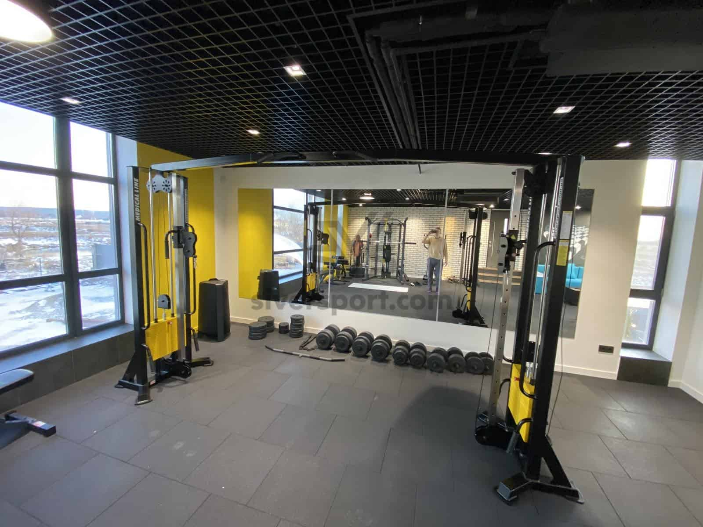
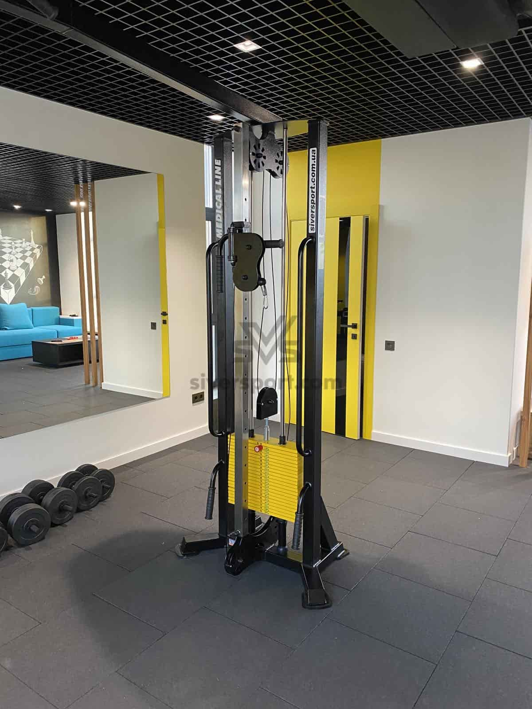
📍 Чернігів, Україна
Корпоративний спортивний простір для співробітників великого підприємства. Тренажери МТБ дозволяють відновлюватись після фізичних навантажень, профілактувати захворювання хребта у людей з сидячою роботою та займатись в обідню перерву. Відмінний приклад корпоративної турботи про здоров'я команди.
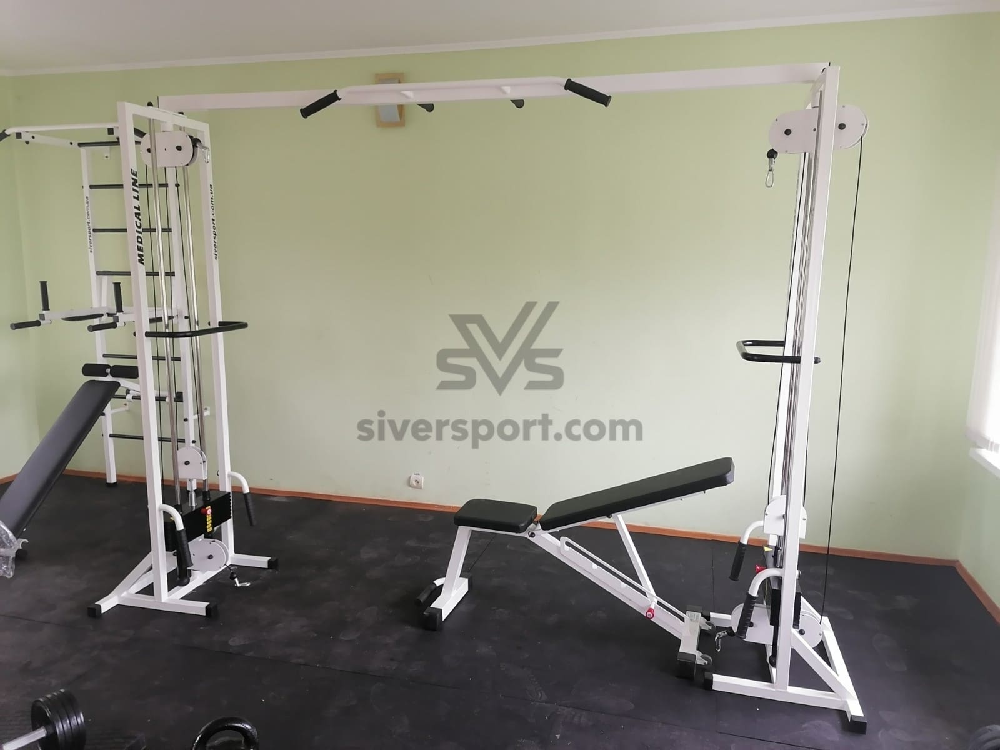
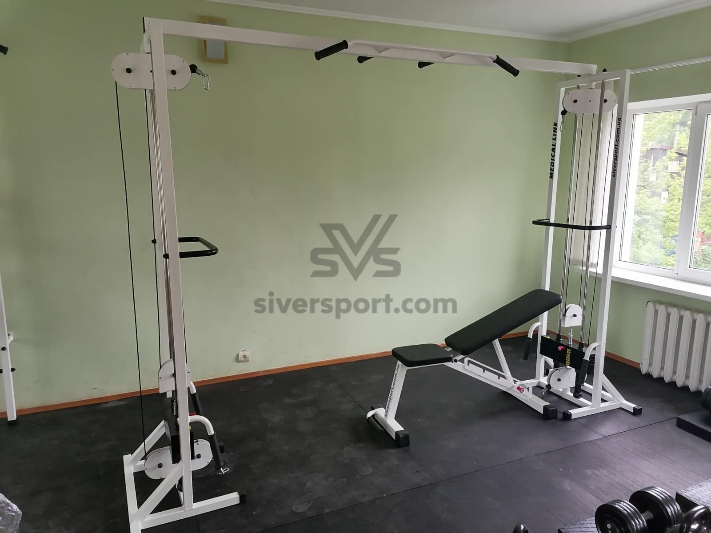
Підберемо тренажери МТБ під ваш простір і бюджет. Від домашнього залу до повноцінного реабілітаційного центру.